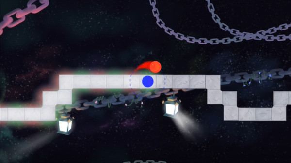
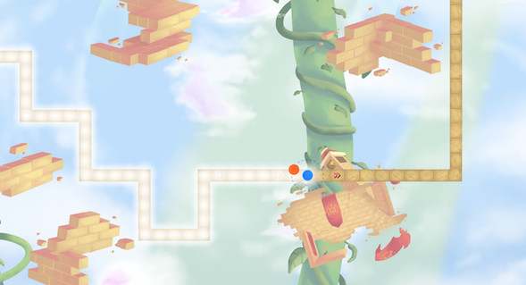
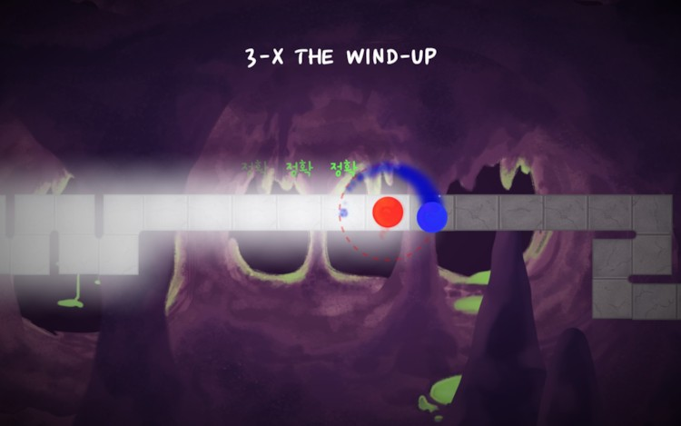
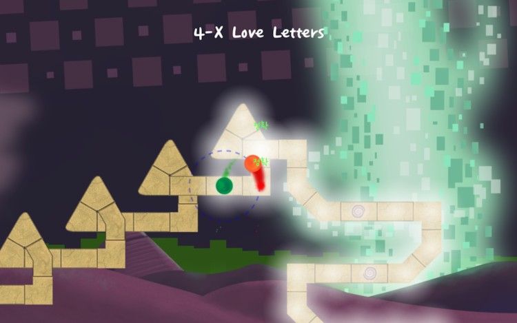
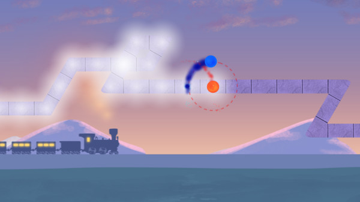
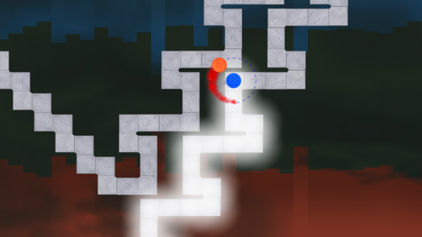
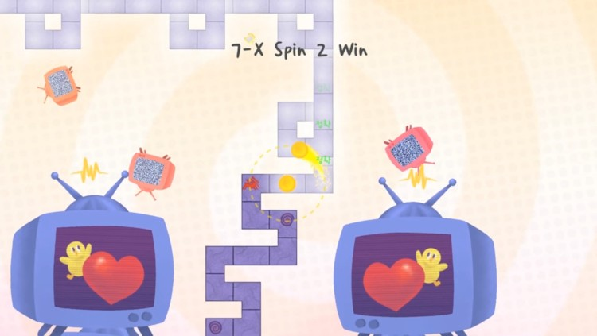
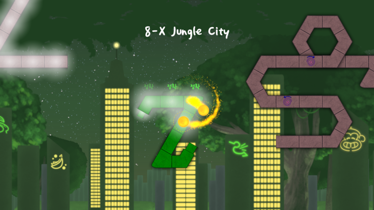
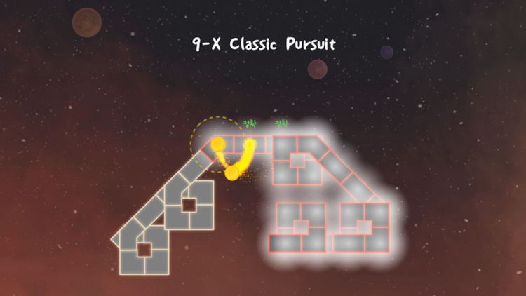
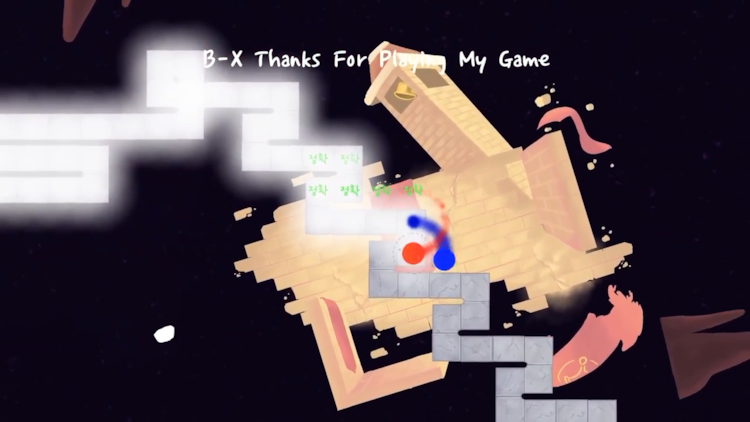

1. A Dance of Fire and Ice
첫 보스곡, 어렵지 않은 난이도이지만 처음 맞이하기에 입문한 유저들이 해메는 구간.
메인 메뉴의 BGM이 이 스테이지의 곡을 0.8배속으로 재생한 것이다.
2. Offbeats
엇박의 개념이 등장하는 세계. 중반부에 처음으로 토끼가 등장한다.
(토끼 :박자가 2배로 빨라져 원이 돌아가는 속도가 2배로 빨라진다.)
3. THE WIND-UP
처음 맞이하는 난관. 모든 세계들 중 가장 짧지만, 앞의 세계와 달리 난이도가 급격하게 어려워진다.
ㄷ자 + 엇박자 연속 구간이 포인트.
4. Love Letters
3번째 세계 이후 맞이하는 평화로운 세계.
난이도는 가장 쉬운 편인 동시에 셋인단음 삼각형 패턴 등 새로운 패턴들이 많이 등장한다. 판정이 아주 널널해 자기도 모르게 클리어 당해버린다.
5. The Midnight Train
리듬이 애매하다는 평가를 받는 세계.
5/4박자, 3/4박자 등 독특한 박자들이 많이 나와 익숙해지기가 힘들다.
6. PULSE
세 번째 세계 이후 두 번째로 맞이하는 난관.
셋째 세계와는 반대로 최장 시간의 BGM을 가지고 있으며 ㄴ,ㄷ,ㅁ 모양 구간의 연속으로 플레이어를 어지럽게 만든다. 빨리 클리어해도 30분은 소모되는 스테이지.
7. Spin 2 Win
ㄷ자와 소용돌이 구간이 매우 많은 세계.
이후 나올 보너스 세계 이후에 출시된 첫 세계로, 해당 세계의 해금 조건은 네 번째 세계를 1배속으로 클리어하는 것이다.
8.Jungle City
세 번째 맞이하게 되는 난관으로, BPM이 200BPM으로 매우 빠르고 연타 구간이 많아 난이도가 어렵다.
다섯 번째 세계의 마름모 구간이 초반부터 등장하며 카메라 시점이 자주 바뀌고 길이 근접해야 생기는 등, 어려운 요소가 매우 많은 세계.
9. Classic Pursuit
새로운 리듬이 등장하는 세계.
다양한 패턴이 등장하지만 난이도는 그리 어렵지 않다. 특이한 점은 UFO가 플레이어가 이미 밟았던 발판을 회수해가서는 앞에 없는 발판을 깔아준다.
B. Thanks For Playing My Game
A Dance of Fire and Ice의 진 최종보스이자 마지막 난관.
시작은 평화롭게 시작하지만 토끼를 밟는 순간 BPM이 300으로 증가하며 다채로운 박자와 연타를 감당해야 한다.
맵 해금 조건부터 1~5번째 세계의 보스 곡을 1.5배속으로 클리어, 6번째 세계의 보스 곡을 1.1배속으로 클리어해야 한다.